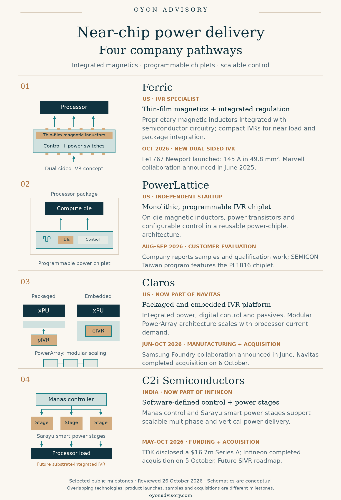

Back to Research & Perspectives
Near-Chip Power Delivery: Four Company Pathways
AI processors need stable voltage as well as sufficient power. Moving the final voltage-conversion stage closer to the processor shortens the high-current path, reducing distribution losses and helping control voltage during sudden workload changes.
Four companies illustrate overlapping approaches: Ferric, PowerLattice, Claros, and C2i Semiconductors. Their recent milestones span product launches, customer sampling, manufacturing partnerships, and acquisitions. The comparison connects materials and circuit design with the practical task of integrating power into advanced processor packages.
Where the technologies fit
Integrated voltage regulators (IVRs) combine regulation circuitry and power components in compact devices. Vertical power delivery concerns how power reaches the processor through the board and package. The two can work together, with implementations differing in their magnetics, control architecture, and packaging.
Ferric and PowerLattice integrate magnetic inductors with power circuitry. Claros offers packaged and embedded implementations with modular scaling. C2i emphasizes software-defined controllers and smart power stages, supporting a future substrate-integrated IVR roadmap. [1] [2] [3] [4] [5] [6] [7] [8] [9]


Four companies and their recent milestones
1. Ferric — thin-film magnetic integration | US
Ferric integrates proprietary thin-film magnetic inductors with semiconductor circuitry, miniaturizing a component that normally occupies substantial space. Its IVRs combine control, power switches, and passives, supporting regulation close to or inside the processor package. The underlying capability spans magnetic materials, fabrication processes, and circuit integration. [1]
On 12 October 2026, Ferric launched its Fe1767 Newport dual-sided IVR, specifying 145 A in 49.8 mm² and up to 90.5% efficiency. Connections on opposite surfaces support a vertical power path. Its June 2025 Marvell collaboration provides another route toward integration into custom processors. These are vendor specifications and collaboration milestones. [2] [3]
2. PowerLattice — programmable power chiplets | US
PowerLattice’s Rainier micro-IVR combines on-die magnetic inductors, power transistors, and programmable control in a monolithic chiplet. Its emphasis is a configurable platform for different processors. The company says adoption requires package-substrate changes rather than compute-die redesign. This overlaps with Ferric’s integrated-magnetics approach; programmability alone does not establish a performance advantage. [4] [5]
Following a $25 million Series A in November 2025, PowerLattice reported initial customer samples and ongoing qualification work in August 2026. The September 2026 SEMICON Taiwan program also features its PL1816 chiplet, adding a named device to the public technology description. [4] [5] [6]
3. Claros — packaged and embedded IVR platforms | US
Claros integrates power transistors, digital control, inductors, and capacitors into a common technology stack. Its packaged IVR (pIVR) and embedded IVR (eIVR) implementations provide different integration routes, while the modular PowerArray architecture is designed to scale with processor current requirements. [7]
In June 2026, Claros announced a Samsung Foundry manufacturing collaboration in Austin, with samples planned for 2026. Navitas completed its acquisition on 6 October 2026, combining Claros’s final-stage regulation technology with its upstream GaN and SiC portfolio. Manufacturing plans and acquisition completion do not establish volume processor deployment. [7] [8]
4. C2i Semiconductors — software-defined power control | India
C2i’s disclosed platform centers on the Manas software-defined controller and Sarayu smart power stage. Its scalable multiphase architecture is intended to accommodate changing processor and power-network requirements. Compared with Ferric’s materials-and-integration emphasis, C2i’s public proposition places greater emphasis on control and system architecture. [9]
TDK Ventures disclosed participation in a $16.7 million Series A in May 2026. Infineon completed its acquisition on 5 October 2026. Infineon identifies digital control, multiphase controllers, and smart power stages as the acquired capabilities, with future Substrate Integrated Voltage Regulators (SIVR) among the combined team’s development directions. [9] [10]
What these milestones tell us
Ferric provides named IVR products and published specifications; PowerLattice emphasizes a configurable chiplet platform; Claros combines integration options with modular scaling; C2i contributes adaptive control and power-stage expertise. These distinctions describe public engineering emphases, not exclusive capabilities or a performance ranking.
The acquisitions also indicate established suppliers’ interest in near-chip power delivery. The next evidence to watch is qualification in named processor platforms, manufacturable package integration, and repeat production orders.
Selected public sources
- Ferric, Technology.
- Ferric, Fe1767 Newport launch, 12 October 2026.
- Marvell, Package Integrated Voltage Regulator power solutions, 17 June 2025.
- Celesta Capital, A Conversation with PowerLattice, 11 August 2026.
- PowerLattice, Series A announcement, 17 November 2025.
- SEMICON Taiwan, IVR Power Chiplets into xPU Package, September 2026 program.
- Navitas, Claros acquisition completion, 6 October 2026, company release filed with the SEC.
- Claros, Samsung manufacturing collaboration, 16 June 2026.
- TDK Ventures, C2i investment announcement, 27 May 2026.
- Infineon, C2i acquisition completion, 5 October 2026.